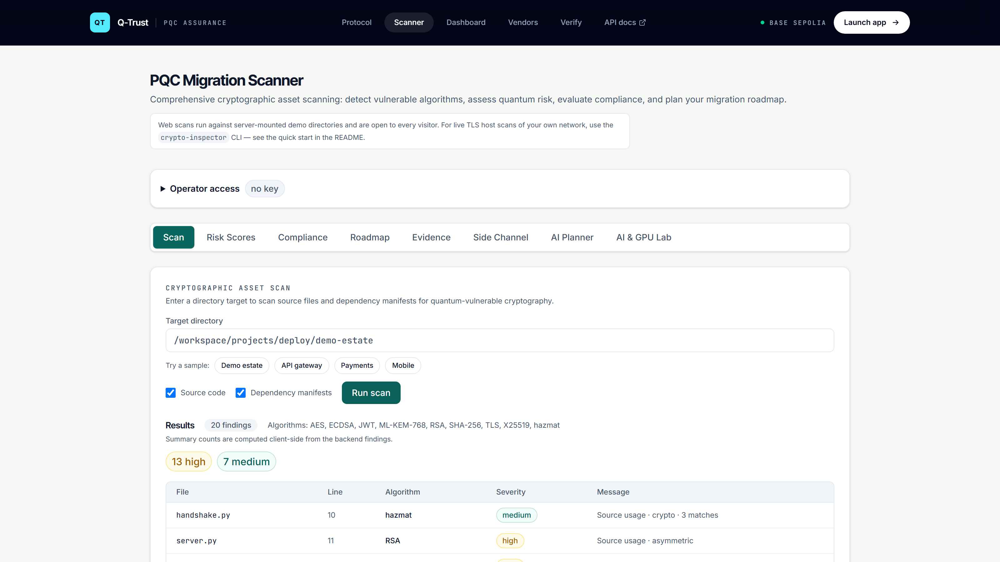
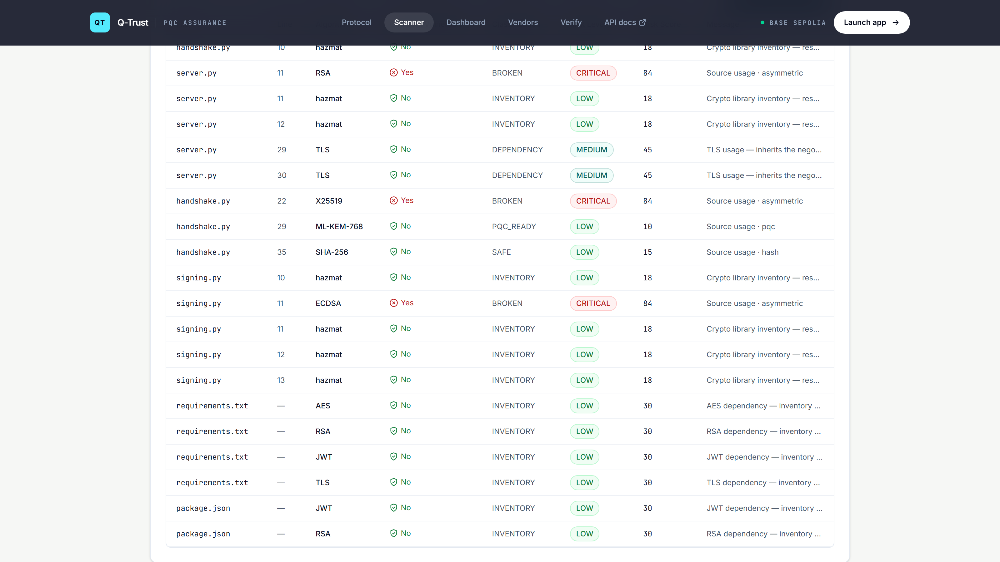
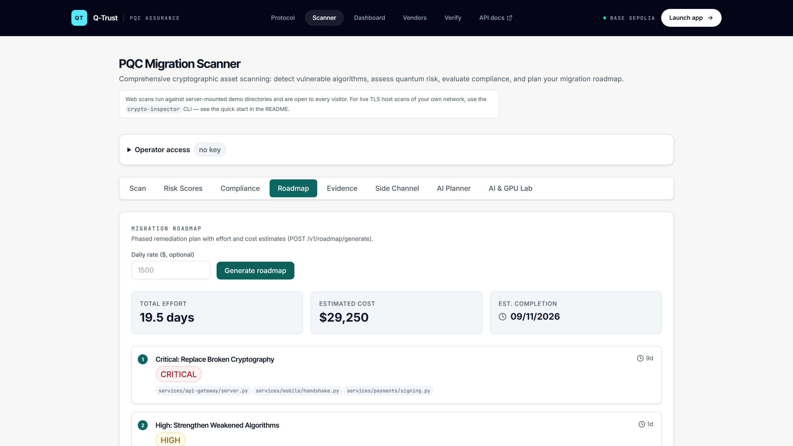
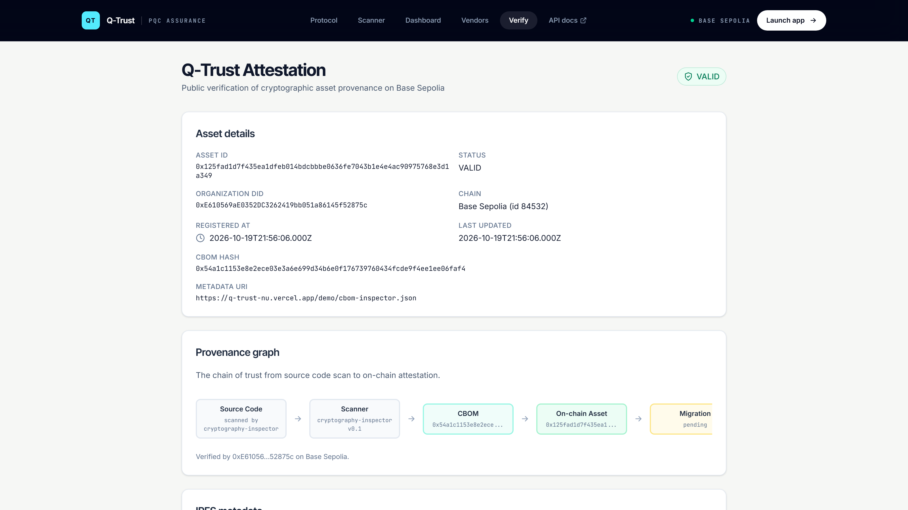
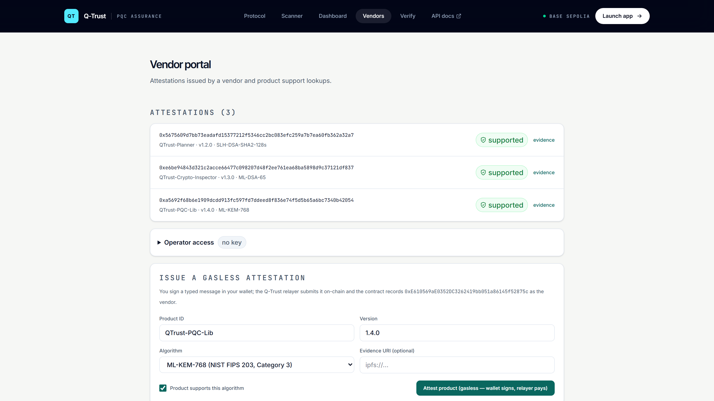

Attackers record today’s encrypted traffic and wait for a quantum computer to read it. The data is already gone.
Scan the estate. Rank the exposure. Plan the move. Anchor the evidence. Then let anyone verify it — without a wallet, or an account.
Source, dependency manifests, certificates and binaries. Q-Trust maps the cryptography that is actually deployed — not the cryptography the architecture diagram claims.

Every finding gets a harvest-now-decrypt-later score, a NIST and CNSA classification, and a migration priority. No black box.

The planner sequences the migration by risk, effort and dependency — and states the evidence each step has to produce.

The evidence bundle stays with the organization. Its SHA-256 fingerprint is written to Base Sepolia, so the record can be proven without being exposed.
No wallet. No account. Paste an asset ID and Q-Trust reads the registry directly, then walks the provenance chain from source code to the chain.

A vendor connects a wallet, signs the claim off-chain with EIP-712, and Q-Trust submits it. The signer must hold VENDOR_ROLE on-chain. The vendor never pays gas.
